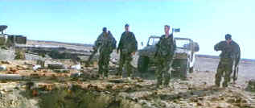

|

|
|
The Golden Bowl has been cited as an ISF Reference
DVD.
Click the ISF image for the complete list of ISF cited DVDs. |
CURRENT DVD REVIEWS |
| Love Me Tender/ C+, B+ |
| Flaming Star/ B, B |
| Charlotte Gray (SE)/ B+, A- |
| John Q. (SE)/ D+, A- |
| Say Anything (SE)/ B+, B |
| Man of the Century (SE)/ B+, A- |
| Collateral Damage (SE)/ C+, A- |
| S.O.B./ C+, B+ |
| Skin Deep/ C+, B |
| Two Family House/ B, B+ |
| Charlie's Angels (SE)/ C, B+ |
| Victor/Victoria (SE)/ A,B+ |
| Great Race, The/ B+, B+ |
| Lagaan/ C, C+ |
| Circus (SE)/ C+, A |
| To Gillian on Her 37th
Birthday/ B-, C+ |
| Audition (SE)/ A-,B |
| Kansas City Confidential/ B, C- |
| Amélie (SE)/ B+, A- |
| Big Heat, The/ B+, B+ |
| Fathom/ C+,C |
| Our Lady of the
Assassins/B+,B+ |
| Gosford Park (SE)/ A, A |
| Hombre/ B, B+ |
| Atlantic City/ A, A- |
| Monster's Ball (SE)/ B+, B+ |
| Majestic, The (SE)/ C+, A |
| Kate and Leopold (SE)/ B, B+ |
| A Beautiful Mind (SE)/ A-,A |
| Witness for the Prosecution/
B+, B |
| Memento (SE)/ A, A |
| Harry Potter and the
Sorcerer's Stone (SE)/ B+, A |
| Sorry, Wrong Number/ B, B |
| Key Largo/ A-, A- |
| Vanilla Sky (SE)/ C+, A |
| My First Mister (SE)/ B, B+ |
| Bite the Bullet/ B, C+ |
| Bob Le Flambeur (SE)/ A-, B |
| Black Knight (SE)/ C, A- |
| Vikings, The (SE)/ B, B |
| Ali/ B, A- |
| Gambler, The (1974)/ B+, B- |
| Fatal Attraction (SE)/ B+, B |
| It
Came From Outer Space (SE)/ B, B+ |
| Requiem for a Heavyweight/ B+,B+ |
| Calamity Jane/ A-, B+ |
| Barcelona (SE)/ A-, B |
| Cowboy/ B, C |
| Harvey Girls (SE)/ B+, B+ |
| Serendipity (SE)/ B, B+ |
| Texas Rangers/ C+, C+ |
| Dancing at the Blue Iguana (SE)/ C+, A- |
| Domestic Disturbance (SE)/ C, B+ |
| Bread and Tulips/ B+, B+ |
| Behind Enemy Lines (SE)/ B-, A |
| Metropolis (Anime) SE/ B, B |
| Accused, The/ B+, B+ |
| Projectionist, The/ C+, C+ |
| Tall Guy, The/ B+, B |
| Life on a String/ B+, D- |
| Mulholland Dr./ B+, B+ |
| Omaha (SE)/ C+, D |
| Life as a House (SE)/ B-,B |
| Spy Game (SE)/ B-,A |
| Sexy Beast (SE)/ B+, A- |
| Party, The/ B, C |
| Fresh (SE)/ A-, A- |
| Eat, Drink, Man, Woman/ B+, A- |
| K-Pax (SE)/ B+, A |
| Strictly Ballroom (SE)/ A-, B+ |
| Training Day (SE)/ B+, A (F) |
| Purple Noon/ B+, C+ |
|


Films on Disc has been sited by Classic Movies as one of their
Best New Links.

The editors of Britannica.com have selected Films on Disc as one of
the best on the Internet when reviewed for quality, accuracy of
content, presentation and usability.
© 2002 Films on
Disc
Stuart J. Kobak
ALL RIGHTS RESERVED. |
|
|
| |
|
Three Kings(SE)/A,A
|
|
Warner/1999/115m/ANA 2.35
|
Three Kings speeds ahead like a
formula one race car on the fast track to reckless fascination. When the movie slows down to
more carefully examine its political themes, it's almost as if the director has slammed on the
brakes, shocking the car into a momentary spin. But that's okay. Director David O.
Russell has earned the right to add some international political comment to his magnificently
audacious view of America's 1990's desert war.
 |
|
Blood, guts and treasure. ©Warner |
Three Kings is a rousing
adventure movie building on the heritage of films like Gunga Din or The Man Who Would Be
King and embellishing old formulas with up-to-the-minute sensibilities that appeal to modern
audiences. Set in the parched Iraqi desert during the closing moments of Operation Desert Storm,
the film travels the unexpected road.
Major Archie Gates, the rough and ready career officer two weeks away from
retirement is a direct descendant of Archibald Cutter in Gunga Din. Gates, in between doing
extra service for the female press corps, discovers that an interesting document has been recovered
from one of the Iraqi prisoners. He barges in on dogfaces, Barlow, Elgin and Vig, who are
pondering the possibilities of a treasure map recovered from as unsavory a source as ever surfaced
in an adventure romp. Gates takes control of the operation, and before you can Desert Storm, these
guys are speeding through the sand in a Humvee on a collision course with a stash of Kuwaiti gold.
Saddam's soldiers, Iraqi rebels and their own consciences provide the obstacles that make this
journey to the borders of adventure much more than the usual action fare.
I wonder how many more times George Clooney will have to prove himself a
bonafide movie star before a box office explosion is set off by his fuse? Clooney is terrific as
Gates, giving the character his customary cool bolstered by an eruption of integrity. Mark Wahlberg
finds another good role in Troy Barlow. Wahlberg makes a complex and endearing picture of a
confused young soldier. Spike Jonze is literally an uncovered treasure. Jonze, who directed the
wild ride through the twisted corridors of surrealism, Being John Malkovich, proves as adept
actor. His loyal Conrad Vig is perfect compliment to the cool of Gates and the innocence of Barlow.
Ice Cube plays Chief Elgin with strong physical presence. The supporting roles, many filled by
locales with no professional background, are impeccably interpreted.
David O. Russell lets it all hang out in this directing tour-de-force.
Russell, whose previous films, Spanking the Monkey and Flirting with Disaster were
comedies with an unusual voice, is a major surprise. He gives the action/war movie an infusion of
fresh blood, drawing on the resources of his collaborators with sharpshooter aim. The astounding
photography of Thomas Newton Sigal helps bring Russell's startling vision to life. Crafted with
technical flourish, the camera manages to emphasize the story telling despite its outrageous use.
Carter Burwell's score for Three Kings is another example of the composer's unique ability
to capture the perfect rhythms for a variety of films. And production designer Catherine Hardwicke
does an amazing job of making the American locales taste like the gritty sands of Iraq.
The highest praise I can offer is that this terrific special edition DVD
replicates the look of the theatrical presentation with perspicacious success. The transfer
is quite remarkable considering the challenge presented by the variety of film stocks, lighting
schemes, and process effects Russell and cinematographer Sigal opted for to make this unique film.
The texture of the film almost looks as if the celluloid were laced with sand to produce a feeling
of the desert. The prominent grain is finely replicated with consistent movement. There's not just
one style of grain, but a whole grain vocabulary. High contrast scenes create dramatic effects. The
colors are often distorted to hyper reality. You won't believe the variety of lighting conditions
this transfer is subjected to and manages to display. The DVD is without any noticeable edge
enhancement and the result is a sharp and well defined picture. Warner the good sense to add an
opening caption of caution before the film begins addressing the stylized filming techniques. For
the initiated, this prevents misunderstanding of the deliberate look of Three Kings. The Dolby
Digital 5:1 Surround is a blast (sic), with explosions powerful enough to rock home theater
furniture, bullets ricochets are placed with extreme accuracy, and the smashing Carter Burwell
score is delivered surrounded by the dry air of the desert.
The DVD is a treasure trove of fascinating material. Featuring two audio
commentaries, from Russell, and Producers Charles Roven and Edward L. McDonnell. There's a
typical behind the scenes making of short. Several deleted or expanded scenes can be accessed with
or without Russell's observations. On the Set of Three Kings, a short, highly entertaining
profile of the production design achievements for the film, is narrated by production designer
Catherine Hardwicke. Thomas Newton Sigal, the talented cinematographer, narrates a companion
explanation short about the photographic stylization of Three Kings. If this isn't enough to
sate your videophile appetite the Warner team has included Russell's video journal, another level
of understanding the making of movies. There's lots more. You'll have to get the package to find
out all about it.
|
|

The Exquisite Muse of Zhang
Yimou

The powerful image-making of Zhang Yimou has revealed itself in
virtually every film he has made. Coupled with his remarkable collaboration with actress Gong Li,
Zhang's has built a stunning body of work Click the image to read all about it.

 Direct from the corridors of the Home Theater Forum, Home
Theater Talk is the newest place on the Net to discuss everything home theater. Friendly atmosphere
and knowledgeable folks are the secret ingredients. Direct from the corridors of the Home Theater Forum, Home
Theater Talk is the newest place on the Net to discuss everything home theater. Friendly atmosphere
and knowledgeable folks are the secret ingredients.

ReelUniverse.com is the home of the
true Indies. You will find links to many independent filmmakers selling VHS copies of their films
that have not yet gotten commercial release. None of the filmmakers represented on the site have
DVD product available, but here's hoping.
 Sight and Sound Magazine
is the venerable voice of The British Film Institute. The site includes articles and film reviews.
A great resource in print and on the Internet. Sight and Sound Magazine
is the venerable voice of The British Film Institute. The site includes articles and film reviews.
A great resource in print and on the Internet.
 Lovers of
Hong Kong movies will relish MC4's site that
includes reviews and other information about the Hong Kong movie scene. Lovers of
Hong Kong movies will relish MC4's site that
includes reviews and other information about the Hong Kong movie scene.

The
Movie Poster Archive include extensive poster images from the films of stars like Susan Hayward,
Kirk Douglas, Katharine Hepburn and many more. This month's featured star is Robert Mitchum |
|